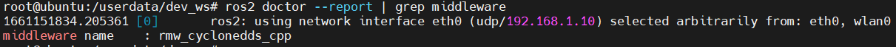

Camera driver and image visualization
Hint
Operating environment and software/hardware configuration are as follows:
- OriginBot Pro
- PC：Ubuntu (≥22.04) + ROS2 (≥humble)
Camera Driver Routine
The camera driver is already built into the OriginBot system image. To make sure the camera is connected correctly and recognized by the system, let's first run the system's built-in camera routine.
Launching the Camera Routine
After successfully connecting to OriginBot through SSH, enter the following command in the terminal:

Check the effect of the routine on the host computer
After successful operation, open the browser on the PC in the same network, enter http://IP:8000, select "web display terminal", and you can view the image and algorithm effects. IP is the IP address of OriginBot.

If the camera is driven smoothly, we can not only see the real-time image, but also an example of human skeleton point recognition, which shows that the camera is operating normally.

Closing routines
After the routine is finished running, please use Ctrl+C to close the launch file running in the terminal to release the camera hardware resources for subsequent routines. Otherwise, the camera device may not be found:

ROS Image Transfer
After confirming that the previous camera routine has been closed, you can then test the image subscription and publishing in the ROS2 environment.
Start the ROS camera driver
After successfully connecting to OriginBot through SSH, enter the following command in the terminal:
export RMW_IMPLEMENTATION=rmw_cyclonedds_cpp
export CYCLONEDDS_URI='<CycloneDDS><Domain><General><NetworkInterfaceAddress>wlan0</NetworkInterfaceAddress></General></Domain></CycloneDDS>'
ros2 launch originbot_bringup camera.launch.py
Info
In order to ensure the real-time quality of the image, we will switch the DDS to cyclonedds to avoid image delays caused by DDS slicing. By default, cyclonedds will bind a certain network card for data transmission. Here, we use the second command to specify the wireless network card wlan0 as the binding network card. You can switch according to the actual situation. For more information, you can also refer to DDS Configuration.
View Camera Topics
After successful running, you can use the following command on the robot or PC in the same network to confirm that the image topic has been published normally.

View Visualization
On the PC side in the same network, also configure the DDS to be used, and then use the rqt_image_view tool to see the real-time camera image of the robot.
export RMW_IMPLEMENTATION=rmw_cyclonedds_cpp
export CYCLONEDDS_URI='<CycloneDDS><Domain><General><NetworkInterfaceAddress>wlp2s0</NetworkInterfaceAddress></General></Domain></CycloneDDS>'
ros2 run rqt_image_view rqt_image_view

Info
Here, we use the second command to specify the wireless network interface wlp2s0 as the binding interface.The name is related to the computer system, and you can use ifconfig to check it. You can switch it according to your actual situation. For more information, please refer to DDS Configuration.

Appendix: DDS Configuration
ROS2 Foxy uses fastdds by default, which can be limiting in image transmission scenarios. In such cases, we can switch to cyclonedds.
Installing DDS
cyclonedds is already configured in the OriginBot image. If you want to configure it on your computer, you can use the following command to install it:
Switching DDS
In the terminal where you are running the commands, use the following command to set the DDS:
By default, CycloneDDS will bind to a specific network interface for data transmission. If you need to switch the bound network interface, you can enter the following command in the same terminal:
export CYCLONEDDS_URI='<CycloneDDS><Domain><General><NetworkInterfaceAddress>wlan0</NetworkInterfaceAddress></General></Domain></CycloneDDS>'
Hint
The middle parameter is the name of the bound network card. Modify it as needed to eth0、wlan0，or the actual network card device number. Reference link: http://www.robotandchisel.com/2020/08/12/cyclonedds/
Use the following command to check whether the DDS used by the current terminal has been successfully switched:

After confirming that the switch is successful, you can run the node that publishes data in the current terminal, such as the camera publisher node:
In the running terminal, you can see the network card that fastdds is currently bound to and publishes data to.